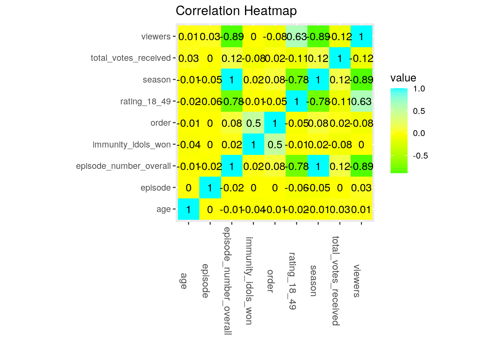
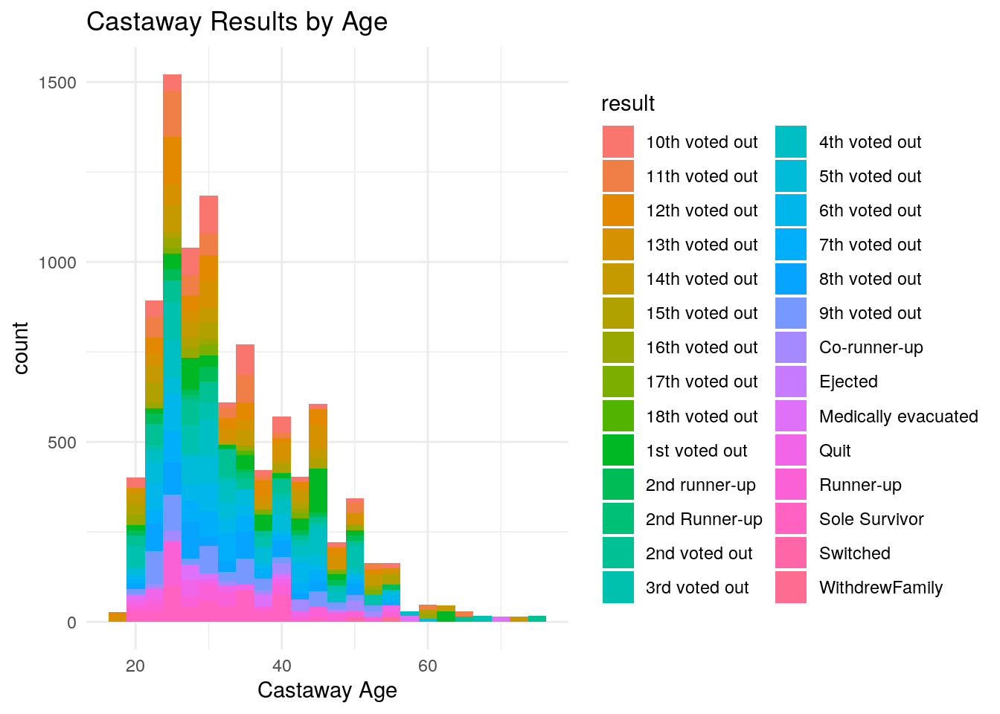
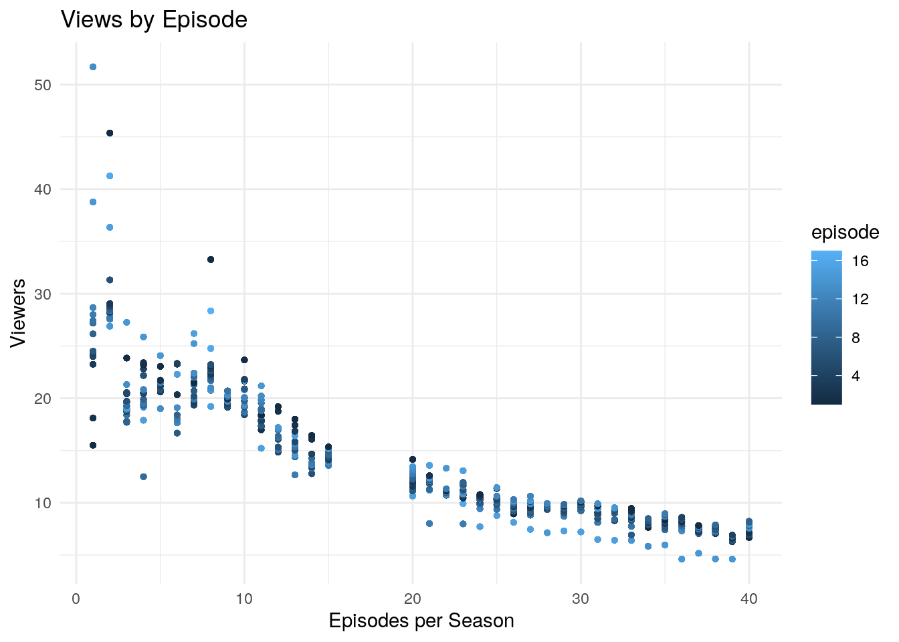
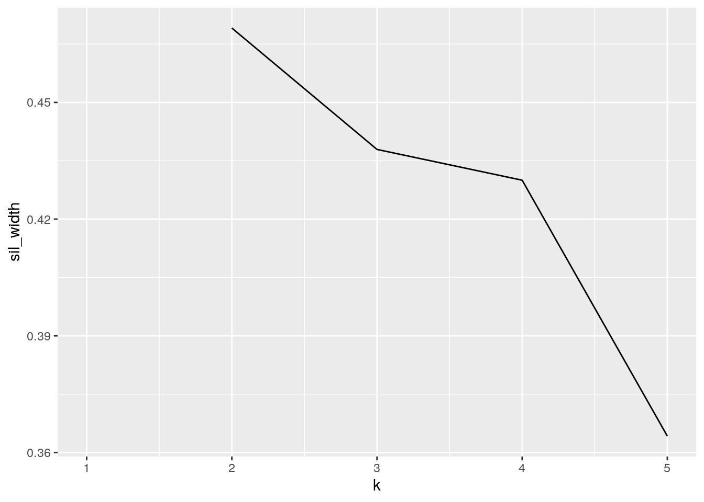

The show Survivor has been running since before I was born, and I have watched it with my mom since infancy. Throughout their 40 seasons, a number of “castaways” compete for $1 million dollars by surviving on an island, voting each other out. The dataset Castaways contains information for every contestant to ever play the game, and the dataset Viewers contains viewing information for each episode in each season. I suspect that viewing on the final episodes, where the winner is revealed, will be higher than views of the premieres, but I also expect to see similar viewing trends across seasons– some seasons are genuinely more interesting than others! I’m also interested to see if there are any patterns between characteristics of each contestant, particularly the winners.
library(tidyverse)
library(readxl)
castaways <- read_excel("castaways.xlsx")
library(readxl)
viewers <- read_excel("viewers.xlsx")
survivor <- castaways %>% full_join(viewers, by = "season")
survivor %>% glimpse()## Rows: 9,797
## Columns: 26
## $ season_name.x <chr> "Survivor: Winners at War", "Survivor: Winners …
## $ season <dbl> 40, 40, 40, 40, 40, 40, 40, 40, 40, 40, 40, 40,…
## $ full_name <chr> "Natalie Anderson", "Natalie Anderson", "Natali…
## $ castaway <chr> "Natalie", "Natalie", "Natalie", "Natalie", "Na…
## $ age <dbl> 33, 33, 33, 33, 33, 33, 33, 33, 33, 33, 33, 33,…
## $ city <chr> "Edgewater", "Edgewater", "Edgewater", "Edgewat…
## $ state <chr> "New Jersey", "New Jersey", "New Jersey", "New …
## $ personality_type <chr> "ESTP", "ESTP", "ESTP", "ESTP", "ESTP", "ESTP",…
## $ day <dbl> 2, 2, 2, 2, 2, 2, 2, 2, 2, 2, 2, 2, 2, 3, 3, 3,…
## $ order <dbl> 1, 1, 1, 1, 1, 1, 1, 1, 1, 1, 1, 1, 1, 2, 2, 2,…
## $ result <chr> "1st voted out", "1st voted out", "1st voted ou…
## $ jury_status <chr> "NA", "NA", "NA", "NA", "NA", "NA", "NA", "NA",…
## $ original_tribe <chr> "Sele", "Sele", "Sele", "Sele", "Sele", "Sele",…
## $ merged_tribe <chr> "NA", "NA", "NA", "NA", "NA", "NA", "NA", "NA",…
## $ swapped_tribe <chr> "NA", "NA", "NA", "NA", "NA", "NA", "NA", "NA",…
## $ swapped_tribe2 <chr> "NA", "NA", "NA", "NA", "NA", "NA", "NA", "NA",…
## $ total_votes_received <dbl> 11, 11, 11, 11, 11, 11, 11, 11, 11, 11, 11, 11,…
## $ immunity_idols_won <dbl> 1, 1, 1, 1, 1, 1, 1, 1, 1, 1, 1, 1, 1, 0, 0, 0,…
## $ season_name.y <chr> "Survivor: Winners at War", "Survivor: Winners …
## $ episode_number_overall <chr> "583", "584", "585", "587", "588", "589", "590"…
## $ episode <dbl> 1, 2, 3, 5, 6, 7, 8, 9, 10, 11, 12, 13, 14, 1, …
## $ title <chr> "Greatest of the Greats", "It's Like a Survivor…
## $ episode_date <dttm> 2020-02-12, 2020-02-19, 2020-02-26, 2020-03-11…
## $ viewers <chr> "6.68", "7.16", "7.14", "6.91", "7.83", "8.18",…
## $ rating_18_49 <chr> "1.3", "1.4", "1.4", "1.4", "1.6", "1.7", "1.6"…
## $ share_18_49 <chr> "7", "7", "7", "6", "7", "8", "7", "6", "7", "6…survivor <- survivor %>% mutate_at(c(20, 24:26), as.numeric)I used a full-join for these datasets because I am joining by one variable, and I plan on filtering the data and selecting particular variables in the wrangling section. Castaways has 663 observations of 18 variables, and Viewers has 591 observations of 9 variables. After this initial join, the resulting “survivor” dataset has 9737 observations of 26 variables, after removing all entries that contain “NA”. There are multiple identical variables in both datasets like episode name and episode number for both datasets, so I will need to remove those redundancies in the wrangling portion.
survivor.long <- survivor %>% pivot_longer(c = contains("_tribe"),
names_to = "category", values_to = "value") %>% separate(category,
into = c("tribes"))my data were already tidy, so I used pivot_longer to combine the all of the tribe variables (original, merge, swap) into one “tribes” variable
# selecting chosen variables, arranging by result, filtering
# types of result, creating variables for winner, runner-up,
# and third place
survivor.1 <- survivor %>% select(season, castaway, episode,
episode_number_overall, personality_type, result, order,
age, immunity_idols_won, total_votes_received, viewers, rating_18_49) %>%
arrange(viewers) %>% filter(result != "Eliminated") %>% mutate(winner = (str_detect(result,
"\\bSole\\b"))) %>% mutate(runnerup = (str_detect(result,
"\\bRunner-up\\b")))
# summaries
survivor.1 %>% summarize(n(), n_distinct(age), mean.age = mean(age,
na.rm = TRUE), sd.age = sd(age, na.rm = TRUE), median.age = median(age,
na.rm = TRUE))## # A tibble: 1 x 5
## `n()` `n_distinct(age)` mean.age sd.age median.age
## <int> <int> <dbl> <dbl> <dbl>
## 1 9557 48 33.4 10.1 31survivor.1 %>% group_by(winner, runnerup) %>% summarise(sum.votes = sum(total_votes_received,
na.rm = T), sum.idols = sum(immunity_idols_won, na.rm = T))## # A tibble: 3 x 4
## # Groups: winner [2]
## winner runnerup sum.votes sum.idols
## <lgl> <lgl> <dbl> <dbl>
## 1 FALSE FALSE 58072 2957
## 2 FALSE TRUE 2095 851
## 3 TRUE FALSE 1746 924# matrix
survivor.1 %>% select(where(is.numeric)) %>% cor(use = "pair")## season episode episode_number_overall
## season 1.000000000 -0.0517534112 0.999594195
## episode -0.051753411 1.0000000000 -0.023672055
## episode_number_overall 0.999594195 -0.0236720549 1.000000000
## order 0.082153936 -0.0014199764 0.082701488
## age -0.006704357 0.0038069428 -0.007342483
## immunity_idols_won 0.015565555 -0.0007767081 0.015207804
## total_votes_received 0.120374817 -0.0042775553 0.120448971
## viewers -0.889129705 0.0309432970 -0.891641513
## rating_18_49 -0.780424760 -0.0599660568 -0.782723080
## order age immunity_idols_won
## season 0.082153936 -0.006704357 0.0155655548
## episode -0.001419976 0.003806943 -0.0007767081
## episode_number_overall 0.082701488 -0.007342483 0.0152078041
## order 1.000000000 -0.013889609 0.5011851256
## age -0.013889609 1.000000000 -0.0378685196
## immunity_idols_won 0.501185126 -0.037868520 1.0000000000
## total_votes_received 0.016602883 0.025986517 -0.0759597081
## viewers -0.078736988 0.014706344 -0.0046178396
## rating_18_49 -0.045561662 -0.018379997 -0.0077819806
## total_votes_received viewers rating_18_49
## season 0.120374817 -0.88912970 -0.780424760
## episode -0.004277555 0.03094330 -0.059966057
## episode_number_overall 0.120448971 -0.89164151 -0.782723080
## order 0.016602883 -0.07873699 -0.045561662
## age 0.025986517 0.01470634 -0.018379997
## immunity_idols_won -0.075959708 -0.00461784 -0.007781981
## total_votes_received 1.000000000 -0.11786645 -0.113425905
## viewers -0.117866455 1.00000000 0.630745244
## rating_18_49 -0.113425905 0.63074524 1.000000000I found it interesting that there were 44 distinct ages among the castaways, with an average age of 33.3, which makes sense to me given my experience in watching the show– while people of all ages compete for Survivor, it’s usually people in their 30’s. After grouping by the winners and runners-up, I generated summaries on the sum of votes they received in their time on the show, as well as the total immunity idols they won. It was interesting that a pattern of either high votes or high immunity idols (not both, or both low) was apparent even in the summary table; of course, it makes sense in the context of the show because winning an immunity idol negates the votes cast against you.
library(ggplot2)
survivor.1 %>% select_if(is.numeric) %>% cor(use = "pair") %>%
as.data.frame %>% rownames_to_column %>% pivot_longer(-1) %>%
ggplot(aes(rowname, name, fill = value)) + geom_tile() +
geom_text(aes(label = round(value, 2))) + xlab("") + ylab("") +
coord_fixed() + ggtitle("Correlation Heatmap") + scale_fill_gradient2(low = "green",
mid = "yellow", high = "cyan") + theme(axis.text.x = element_text(angle = -90,
size = 10))
## Castaway Results by Age
ggplot(survivor.1, aes(age)) + geom_histogram(aes(fill = result),
binwidth = 2.5) + ggtitle("Castaway Results by Age") + xlab("Castaway Age") +
theme_minimal()
## Views by Episode
survivor.1 %>% ggplot(aes(season, viewers)) + geom_point(mapping = aes(season,
viewers, color = episode), size = 1) + ggtitle("Views by Episode") +
xlab("Episodes per Season") + ylab("Viewers") + theme_minimal() *In the correlation heatmap, the only correlations of note were between season and episode number overall, which makes sense because as the seasonsget higher in number, so does the overall episode number. In the Castaway Results by Age chart, the largest count of castaways of the same age was in the 30-years-old range, and the largest proportion of mid-level results also appear to be in this region. I had hoped to see a clear trend indicating if a certain age-group did better in the competition overall, but no such pattern is clear. The Views by episode plot is very interesting because there is a very obvious period where the show was super popular, one episode, “Final Four” of Season 1, episode 13 having a value of 51.6, indicating that 51.6% of Americans with their cable TV on while this was airing were watching Survivor. Viewership has seen a decline in the last decade, but it’s stagnating, and the variance in views between episodes is getting smaller, indicating to me that while few people (like me) still watch this show, they do so religiously!
##Dimensionality Reduction
library(cluster)
survivor.numeric <- survivor.1 %>% select(season, age, viewers) %>%
scale()
sil_width <- vector()
for (i in 2:5) {
pam_fit <- pam(survivor.numeric, k = i)
sil_width[i] <- pam_fit$silinfo$avg.width
}
ggplot() + geom_line(aes(x = 1:5, y = sil_width)) + scale_x_continuous(name = "k",
breaks = 1:5)
## scaling data and applying k
pam1 <- survivor.numeric %>% scale() %>% pam(k = 2)
pam1## Medoids:
## ID season age viewers
## [1,] 2667 0.7635839 -0.1407669 -0.6514583
## [2,] 9355 -1.1013500 -0.3385193 NA
## Clustering vector:
## [1] 1 1 1 1 1 1 1 1 1 1 1 1 1 1 1 1 1 1 1 1 1 1 1 1 1 1 1 1 1 1 1 1 1 1 1 1 1
## [38] 1 1 1 1 1 1 1 1 1 1 1 1 1 1 1 1 1 1 1 1 1 1 1 1 1 1 1 1 1 1 1 1 1 1 1 1 1
## [75] 1 1 1 1 1 1 1 1 1 1 1 1 1 1 1 1 1 1 1 1 1 1 1 1 1 1
## [ reached getOption("max.print") -- omitted 9457 entries ]
## Objective function:
## build swap
## 1.165497 1.043689
##
## Available components:
## [1] "medoids" "id.med" "clustering" "objective" "isolation"
## [6] "clusinfo" "silinfo" "diss" "call" "data"## HERE IS WHERE IT STOPS KNITTING. I've commented out
## everything after this line so I can still send you the
## knitted file, but I give up!
# pamcluster<-survivor.numeric%>% mutate(survivor.numeric,
# cluster=as.numeric(pam1$clustering))
# pamcluster %>%
# ggplot(aes(season,viewers,color=cluster))+geom_point() +
# xlab('Season') + ylab('Viewers (') + ggtitle('Cluster Plot
# of Viewers')
## cluster summary pamcluster%>%
## group_by(cluster)%>%summarize_if(is.numeric,mean,na.rm=T)
## visualizing clusters library(GGally) ggpairs(pamcluster,
## columns=1:4, aes(color=cluster))*After plotting k with sil_width, 2 clusters fit best; likely because there is a gap in viewer data between seasons 16 and 19. Because of this apparent gap, there is no overlap at all between the clusters. The age variable for both clusters is very similar, which is to be expected since there is no reason to believe the average ages of the contestants would significantly change over the seasons. If there weren’t a gap in the viewer seasons, it would be interesting to see how the clustering would have been affected.